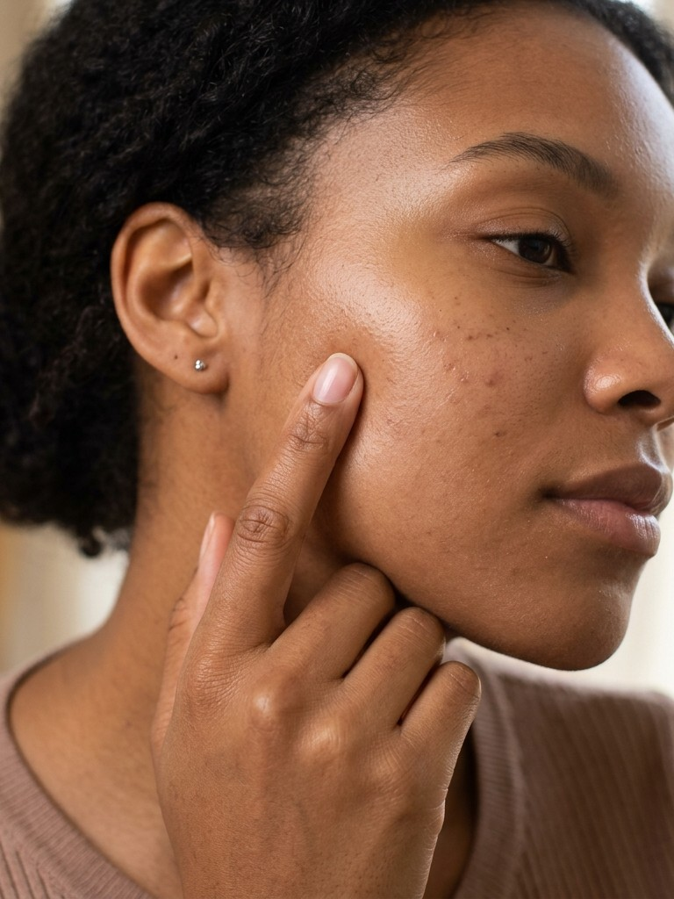

Glow is a medical outcome.
Melanin-rich skin is powerful and reactive. It rarely forgives guesswork. Every plan here begins with protecting the skin, then improving it.

Why dark skin needs a different approach.
Melanocytes in deeper skin tones respond to inflammation, irritation and injury by making more pigment. A peel that is fine on lighter skin can leave dark marks on yours. A harsh laser can cause pale or dark patches. Over-the-counter bleaching creams can cause permanent damage.
So the plan is low and slow: calm the skin, protect it from sun, treat pigment gently, and escalate only when the skin is ready.
Fitzpatrick types describe how skin reacts to sun, not ethnicity. Most Kenyans sit in types IV to VI, where pigment complications are the main risk.
Build a starter routine.
General guidance for common concerns. Prescription-strength plans are made after examination.
- Morning
- Gentle cleanser → niacinamide or azelaic acid → oil-free moisturiser → SPF 30+
- Evening
- Gentle cleanser → adapalene (a few nights a week, building up) → moisturiser
- Avoid
- Scrubs, picking, toothpaste, lemon, harsh alcohol toners
- See us if
- Deep cysts, scarring, or no change after 8 to 12 weeks
- Morning
- Gentle cleanser → vitamin C or azelaic acid → moisturiser → tinted SPF 30+ with iron oxides
- Evening
- Gentle cleanser → azelaic acid or niacinamide → moisturiser; prescription options at consultation
- Avoid
- Unregulated bleaching creams, DIY lemon or baking soda, sun without protection
- See us if
- Marks are spreading, symmetrical on the cheeks, or not fading after 3 months
- Morning
- Creamy cleanser → hydrating serum (hyaluronic acid) → moisturiser → SPF 30+
- Evening
- Cleanser → lactic acid or mild exfoliant 1 to 2 nights a week → rich moisturiser
- Avoid
- Very hot water, over-exfoliating, fragranced products on irritated skin
- Tip
- Moisturise on damp skin and seal with an occlusive on dry areas
- Shaving
- Shave with the grain, use a clean single-blade or clippers with a guard, warm water, no stretching the skin
- After
- Calming moisturiser; low-strength salicylic or glycolic acid a few nights a week
- Avoid
- Very close shaves, plucking ingrown hairs deeply, harsh astringents
- See us if
- Persistent bumps or dark marks. Prescription treatment or laser hair reduction can help
Common, and commonly mistreated.
Hyperpigmentation (PIH)
Dark marks after acne, shaving, eczema or injury. The first goal is to stop the trigger, then fade the mark.
Melasma
Hormonal, sun-triggered patches that return easily. Managed, not “cured”, with strict sun protection and layered therapy.
Acne & acne scarring
Control active acne first, then address texture with careful, melanin-aware techniques.
Razor bumps (PFB)
Curved hairs re-enter the skin and inflame it. Shaving changes, medical therapy, and laser hair reduction.
Dermatosis papulosa nigra
Small dark benign bumps on the cheeks, common on darker skin, treated gently if desired.
Bleaching damage
Recovery from steroid, mercury or high-strength hydroquinone harm, with respect and no judgement.
What helps, and what to watch.
| Ingredient | Helps with | Notes for dark skin |
|---|---|---|
| Sunscreen SPF 30+ | All pigment concerns, scars | Daily, reapplied. Choose formulas that blend without a cast; iron-oxide tints also help melasma |
| Azelaic acid | Acne, dark marks, melasma | Gentle and effective; suitable for long-term use |
| Niacinamide | Oiliness, tone, barrier | Well tolerated; good starter ingredient |
| Vitamin C | Glow, mild pigment | Use stable formulas; may sting if skin is irritated |
| Retinoids (adapalene, tretinoin) | Acne, texture, dark marks | Introduce slowly; irritation itself can cause new dark marks |
| Hydroquinone | Stubborn pigment | Prescription only, short cycles, supervised. Prolonged high-strength use can cause permanent darkening |
| Tranexamic acid | Melasma | Topical or oral under medical supervision; oral requires screening |
| Superficial peels | Acne, texture, tone | Low strength, built up slowly with skin conditioning |
Creams containing mercury or undeclared steroids, “skin lightening” injections, and DIY lemon, baking soda or toothpaste treatments. They can cause lasting damage.
Even tone. Real texture. Still you.


HyperpigmentationMedical-grade plan · 12 weeks


Acne scarringCombination plan · 5 months
Layout preview. Images shown are illustrative placeholders. Replace with real photographs only where the patient has given written consent, shot with identical lighting, angle and distance, unretouched. Individual results vary.
Skin FAQ
Does Black skin need sunscreen?
Yes. Melanin gives some protection (roughly an SPF of 13), but not enough to prevent pigmentation, melasma, burns or skin cancer. Daily sunscreen is the most useful product for dark skin.
Is it safe to lighten my skin?
Evening out dark marks and melasma is safe when done medically. Lightening your natural skin colour is not something we do.
Why do my dark marks keep coming back?
Usually because the trigger is still active: sun, inflammation, hormones or harsh products. We treat the trigger, not only the mark.
Do I need many sessions?
Most skin concerns need a series and consistent home care. You will have a clear plan and a review point before anything is repeated.
Can lasers be used on dark skin?
Some can, with the correct wavelength, conservative energy and a test patch. The device and the operator matter more than the brand.
Is it normal for skin to darken after a peel?
Mild temporary darkening can occur. That is why dark skin needs low-strength peels, skin preparation and strict sun protection.